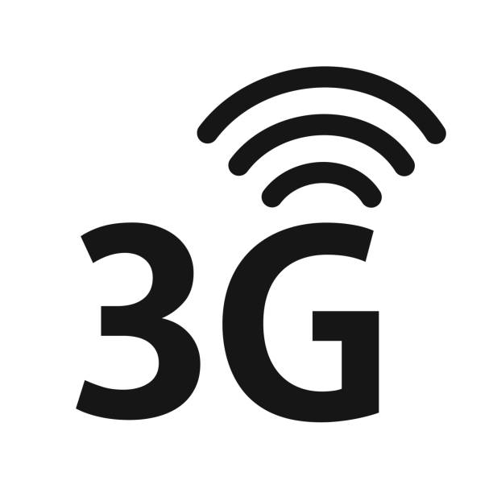
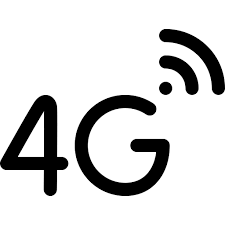
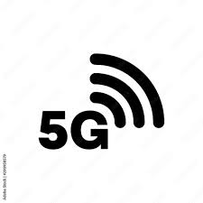

Conhecça algumas tecnologias de internet móvel
As redes 3G foram baseadas em tecnologias como o UMTS (Universal Mobile Telecommunications System) e o CDMA2000, que ofereciam maior largura de banda e melhor desempenho de dados em comparação com o GSM 2G. Isso permitiu que os fabricantes de dispositivos móveis desenvolvessem smartphones mais avançados, equipados com câmeras, navegadores de Internet, aplicativos e outras funcionalidades que antes eram impensáveis. O 3G também trouxe uma maior padronização e interoperabilidade entre as redes móveis, facilitando o roaming internacional e a compatibilidade entre dispositivos e operadoras.
   Cadastra-se para ficar informado